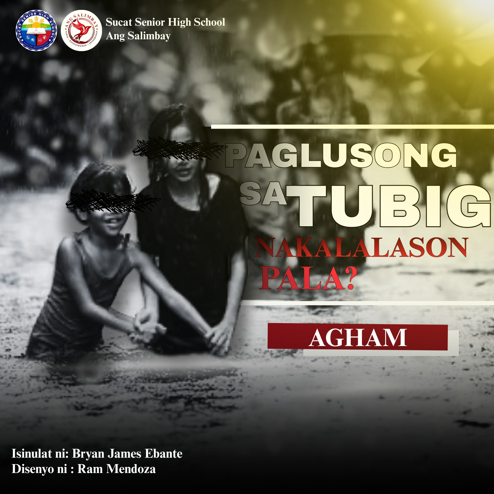

Mga Tuklas at Kaalaman

Paglusong sa Tubig, Nakalalason Pala
Sa tuwing bumabaha, karaniwang tubig lamang ang nakikita ng ating mga mata. Ngunit sa likod ng maputik at maruming tubig ay maaaring may bacteria, dumi, kemikal, matutulis na debris, at iba pang panganib na hindi agad napapansin. Alamin kung bakit hindi dapat basta-basta lumusong sa baha at kung paano mapoprotektahan ang sarili laban sa mga panganib nito.

Pax Silica, Kinuwestiyon Dahil sa Posibleng Epekto sa Komunidad
Kasabay ng planong gawing sentro ng artificial intelligence, semiconductors at advanced technology ang New Clark City, umuusbong ang mga pangamba tungkol sa posibleng epekto ng Pax Silica sa mga magsasaka, katutubong komunidad, tubig, at kalikasan.
✍🏼 Sumulat: Bryan James Ebante
🖼️ Kumuha ng Larawan: Ram Mendoza